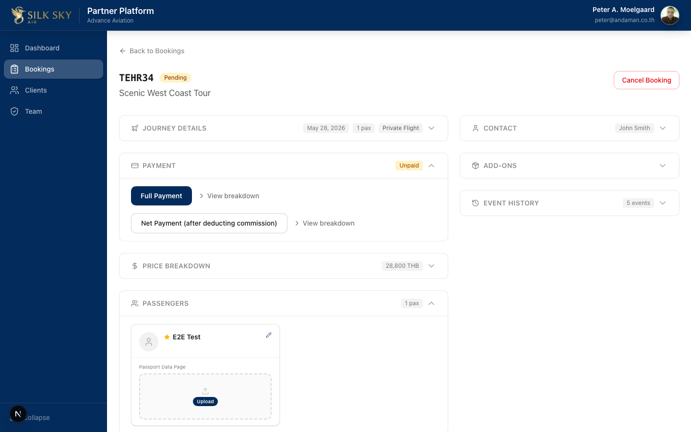
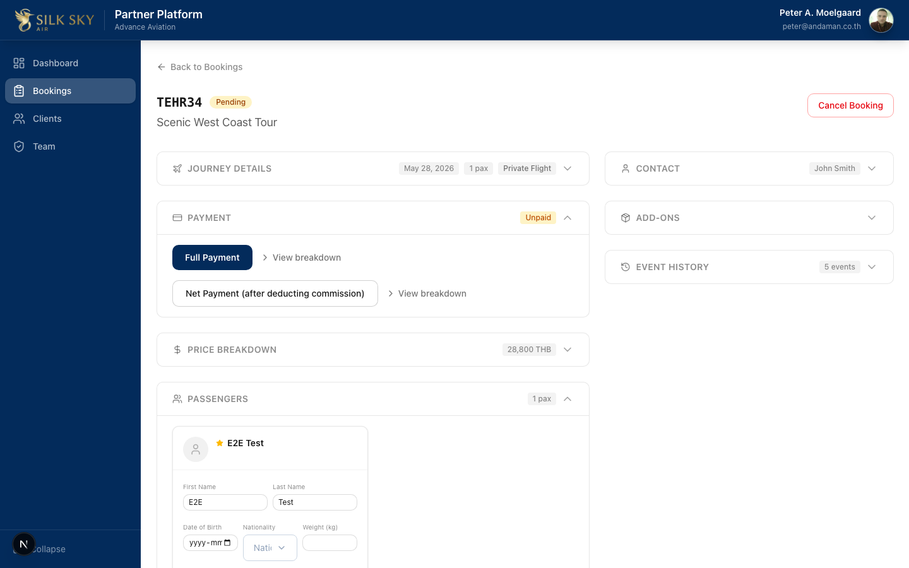
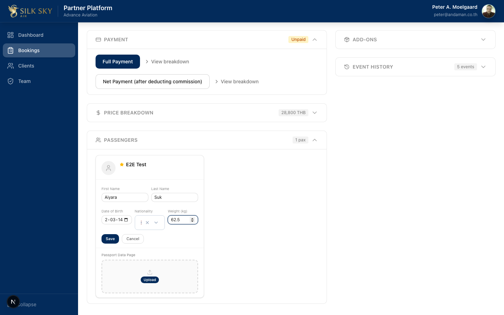

Edit Passenger (Partner Portal)
App: Partner Portal Who uses it: Partner staff updating a passenger's details on an existing booking — names, date of birth, nationality, exact weight. What it does: Inline-edit a passenger card on the booking detail page. Nationality is picked from a searchable selector bound to the
public.countriescatalogue (ISO-2 codes — the FK is always satisfiable). Weight is captured as an exact number in kg, validated server-side as a positive value at or under 250 kg.
Before you start
- Local URL:
http://localhost:3050(staging / production: same paths onstaging.partner.silkskyair.com/partner.silkskyair.com). - Account: Partner Portal user attached to the partner organization that owns the booking.
- Prerequisites: a booking in a status that allows amendments (
is_amendable = true). The edit pencil is only rendered for amendable bookings.
Background — what was broken before W23
- The nationality field used to be a free-text
<input>. Partners typed values like "Thai" or "Thailand" that thepublic.countries(code)FK couldn't resolve, blocking save with an opaque database error. F1.10 R12 wired in a<NationalitySelector>whose options are loaded from/api/countries— every option resolves to an ISO-2 code the FK always accepts. - The weight field was a categorical bucket FK to
weight_ranges(under_50,50_90,90_110,over_110,prefer_not_to_say). The Partner Portal UI had already swapped to<input type="number">a few releases ago, but the DB schema was never aligned — typing a number produced a 500 from the FK constraint. F2.3 MP1-W03 (landed alongside F1.10) migrated the column tonumeric(5,2)with positive + 250 kg sanity checks. The Member Portal swapped to the same numeric input in the same release.
Step-by-step
Step 1 — Open the passenger card
From the booking detail page, expand the Passengers section. Each passenger renders as a card with name, nationality (ISO-2 code badge), weight badge, date-of-birth badge, and a pencil icon (top right) for editing.

What you should see: the lead passenger card (or the one you want to edit) with the existing values shown as small grey badges under the name, and a pencil icon at the top-right of the card.
Step 2 — Click the pencil to enter edit mode
The card expands into an inline form with five fields: first name, last name, date of birth, nationality (selector), weight (number, kg).

What you should see: First / Last name as text inputs (pre-populated), DOB as a date picker, Nationality showing the selector trigger ("Nat…" placeholder if blank), Weight as a number input, and Save / Cancel buttons at the bottom.
Step 3 — Pick a nationality
Click the Nationality field to open the selector. Type into the search box at the top — the list filters live as you type. Click an option to select.
What you should see: A floating dropdown with a search input at the top and a scrollable list of options below. Each option shows the country flag emoji on the left and the nationality label (e.g. "Thai", "Thai" matches Thailand) on the right.
Step 4 — Fill the rest and save
Type the remaining values. Weight accepts decimals down to 0.1 kg (e.g. 72.5), rejects 0 / negatives / non-numeric input, and rejects values over 250 kg.

What you should see: All five fields filled with the new values. Save is enabled (the form doesn't gate on field-level validation in the UI — server-side validation runs on click).
Click Save. The form closes back to the display state, the booking refreshes, and the card shows the new values as badges.
Step 5 — Verify the save
The card collapses back to display mode showing the new values. Reload the page if you want to confirm the save was persisted; the same badges should render from the DB-backed booking detail.
What you should see: The passenger's new name in the heading, and the three small grey badges under it showing the new nationality (ISO-2 code, e.g. TH), new weight (e.g. 62.5kg), and new date of birth (e.g. 1992-03-14).
Tips & common questions
- The Edit pencil isn't showing on a passenger card. The booking's status doesn't allow amendments. Check
booking_statuses.is_amendablefor the current status — only amendable statuses show the pencil. - The nationality badge shows the ISO code, not the country name. That's deliberate. The display is intentionally compact; the selector resolves names → codes on save, the badge surfaces the persisted code. Future enhancement could swap to the localized country name.
- What if I enter a weight of
0? The Save API returns 400 with "Weight must be positive". The inline error block appears red at the top of the form. Re-enter a valid value and click Save again. - What if I enter a weight greater than 250 kg? Same flow — server returns 400 with "Weight must be 250 kg or less". The 250 kg cap is Advance Aviation's operational sanity check.
- Non-numeric weight input? Browsers prevent letters in
<input type="number">, but for safety the server also rejects non-finite values with "Weight must be a number". - Where does the country list come from?
GET /api/countriesreadspublic.countries(anonymous SELECT is allowed by RLS). Cached in module scope byuse-countries.ts— fetched once per page lifetime.
Reference
- Code:
silkskyair-partner/components/bookings/passenger-card.tsx(card + inline form) ·silkskyair-partner/lib/hooks/use-countries.ts(cached fetch) ·silkskyair-partner/app/api/countries/route.ts(catalogue) - PATCH route + validation:
silkskyair-partner/app/api/bookings/[id]/passengers/[passengerId]/route.ts— name/DOB/nationality pass-through, weight validated as positive ≤ 250. - Migration:
silkskyair-api/supabase/migrations/20260528120000_passenger_weight_numeric.sql— drops theweight_rangesFK, changesbooking_passengers.weight_kgfromtexttonumeric(5,2), adds CHECK constraints (positive + ≤ 250). - E2E:
silkskyair-partner/e2e/partner-passenger-edit-nationality.spec.ts— simple: pick Thai → save → reload → nationality persists.silkskyair-partner/e2e/partner-passenger-edit-full.spec.ts— complex: all editable fields + weight=0 rejection.